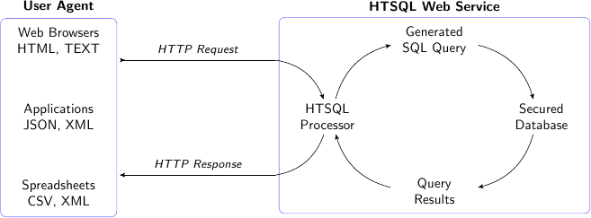
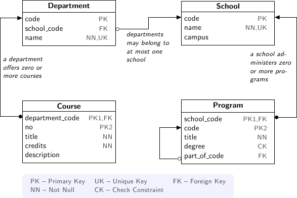

Table of Contents
A query language for the accidental programmer
HTSQL makes accessing data as easy as browsing the web. An HTSQL processor translates web requests into relational database queries and returns the results in a form ready for display or processing. Information in a database can then be directly accessed from a browser, a mobile application, statistics tool, or a rich Internet application. Like any web resource, an HTSQL service can be secured via encryption and standard authentication mechanisms – either on your own private intranet or publicly on the Internet.
HTSQL users are data experts. They may be business users, but they can also be technical users who value data transparency and direct access. Business users can use HTSQL to quickly search the database and create reports without the help of IT. Programmers can use it as data access layer for web applications. HTSQL can be installed by DBAs to provide easy, safe database access for power users.
HTSQL is a schema-driven URI-to-SQL translator that takes a request over HTTP, converts it to a set of SQL queries, executes these queries in a single transaction, and returns the results in a format (CSV, HTML, JSON, etc.) requested by the user agent:
The HTSQL query processor does heavy lifting for you. Using relationships between tables as permitted links, the HTSQL processor translates graph-oriented web requests into corresponding relational queries. This translation can be especially involved for sophisticated requests having projections and aggregates. For complex cases, an equivalent hand-written SQL query is tedious to write and non-obvious without extensive training. By doing graph to relational mapping on your behalf, HTSQL permits your time to be spent exploring information instead of debugging.
The HTSQL language is easy to use. We’ve designed HTSQL to be broadly usable by semi-technical domain experts, or what we call accidental programmers. We’ve field tested the toolset with business analysts, medical researchers, statisticians, and web application developers. By using a formalized directed graph as the underpinning of the query algebra and by using a URI-inspired syntax over HTTP, we’ve obtained a careful balance between clarity and functionality.
We hope you like it.
The following examples show output from the HTSQL command-line system, which is plain text. HTSQL can output HTML, CSV, XML and many other formats. This makes it suitable not only for direct queries, but as a data access layer for application development.
We’ll use a fictional university that maintains a database for its student enrollment system. There are four tables that describe the business units of the university and their relationship to the courses offered:
The university consists of schools, which administer one or more degree-granting programs. Departments are associated with a school and offer courses. Further on in the tutorial we will introduce other tables such as student, instructor and enrollment.
HTSQL requests start with a forward-slash /. To return all rows and columns from the school table, sorted by primary key, write:
| code | name | campus |
|---|---|---|
| art | School of Art & Design | old |
| bus | School of Business | south |
| edu | College of Education | old |
Hint
In this tutorial query results are shown truncated. Click on any example request to open it at demo.htsql.org and see the complete output.
Scalar expressions, including arithmetic and boolean operations, can be written directly:
HTSQL has many built-in functions. For instance you could use the function count() to get the number of rows in a table:
HTSQL uses a regular and intuitive syntax for expressions ranging from table selection to complex calculation.
Use a selector, marked with { curley braces }, to specify more than one output column:
| count(school) | count(program) | count(department) |
|---|---|---|
| 9 | 40 | 27 |
When returning data from a table, use a selector to choose columns for display:
| school_code | code | title |
|---|---|---|
| art | gart | Post Baccalaureate in Art History |
| art | uhist | Bachelor of Arts in Art History |
| art | ustudio | Bachelor of Arts in Studio Art |
| bus | gecon | Master of Arts in Economics |
In addition to table attributes, you could select arbitrary expressions. The following example displays, for each school record, the school’s name and the number of associated departments:
| name | count(department) |
|---|---|
| School of Art & Design | 1 |
| School of Business | 3 |
| College of Education | 2 |
| School of Engineering | 4 |
To title an output column, use the :as decorator:
| name | # of Dept. |
|---|---|
| School of Art & Design | 1 |
| School of Business | 3 |
| College of Education | 2 |
Since HTSQL is a web query language, there are two characters that have special meaning: % is used to encode reserved and unprintable characters as hexadecimal UTF-8 octets; # represents query fragments that can be truncated by your browser. Hence, these characters must be percent-encoded in HTSQL queries: % is written %25; # is written %23. Depending upon the browser, other characters may be percent-encoded, for example, the space `` `` may show up as %20.
In our example schema, each program is administered by a school. Since the HTSQL processor knows about this relationship, it is possible to link data accordingly:
| name | title |
|---|---|
| School of Art & Design | Post Baccalaureate in Art History |
| School of Art & Design | Bachelor of Arts in Art History |
| School of Art & Design | Bachelor of Arts in Studio Art |
It is possible to link data through several relationships. Since course is offered by a department which belongs to a school, we can write:
| name | name | title |
|---|---|---|
| School of Business | Accounting | Practical Bookkeeping |
| School of Business | Accounting | Introduction to Accounting |
| School of Business | Accounting | Accounting Information Systems |
| School of Business | Accounting | Financial Accounting |
This request can be shortened a bit by collapsing the duplicate mention of department; the resulting request is equivalent:
For cases where you don’t wish to specify each column explicitly, use the wildcard * selector. The request below returns all columns from department and all columns from its correlated school:
| code | name | school_code | code | name | campus |
|---|---|---|---|---|---|
| acc | Accounting | bus | bus | School of Business | south |
| arthis | Art History | la | la | School of Arts and Humanities | old |
| astro | Astronomy | ns | ns | School of Natural Sciences | old |
| be | Bioengineering | eng | eng | School of Engineering | north |
Since the HTSQL processor knows about relationships between tables in your relational database, linking tables in your reports is trivial.
Use the filter operator ? to show only data that satisfies some criteria. For example, to return departments in the School of Engineering we can write:
| code | name | school_code |
|---|---|---|
| be | Bioengineering | eng |
| comp | Computer Science | eng |
| ee | Electrical Engineering | eng |
| me | Mechanical Engineering | eng |
This request returns all records in the department table where the column school_code is equal to 'eng'. In HTSQL, literal values are single quoted so that 'eng' isn’t confused with a column name.
For a case-insensitive substring match, use the ~ operator:
| school_code | code | title | degree | part_of_code |
|---|---|---|---|---|
| edu | glited | Master of Arts in Literacy Education | ma | |
| la | upolisci | Bachelor of Arts in Political Science | ba |
Often times we want to compare a column against values from a list. The next example returns rows from the program table for the “Bachelors of Arts” ('ba') or “Bachelors of Science” ('bs') degrees:
| school_code | code | title | degree | part_of_code |
|---|---|---|---|---|
| art | uhist | Bachelor of Arts in Art History | ba | |
| art | ustudio | Bachelor of Arts in Studio Art | ba | |
| bus | uacct | B.S. in Accounting | bs | |
Complex filters can be created using boolean connectors, such as the conjunction (&), alternation (|), and negation (!) operators. The following request returns programs in the “School of Business” that do not grant a “Bachelor of Science” degree:
| school_code | code | title | degree | part_of_code |
|---|---|---|---|---|
| bus | gecon | Master of Arts in Economics | ma | |
| bus | pacc | Graduate Certificate in Accounting | ct | |
| bus | pbusad | Certificate in Business Administration | ct | |
Filters can be combined with selectors and links. The following request returns courses, listing only department number and title, having less than 3 credits in the “School of Natural Science”:
| department_code | no | title |
|---|---|---|
| astro | 106 | General Astronomy I Lab |
| astro | 211 | General Astronomy II Lab |
| astro | 241 | Telescope Workshop |
| astro | 329 | Radio Astronomy Lab |
By default, with a simple table expression such as /school, all rows are returned in the order of the primary key columns. To override the sort order, you can use sort() function:
| code | name | campus |
|---|---|---|
| edu | College of Education | old |
| ph | Public Honorariums | |
| art | School of Art & Design | old |
| la | School of Arts and Humanities | old |
Sort direction can be specified explicitly using + for ascending and - for descending order. Also, you can sort by multiple columns. The following example sorts courses in ascending order by department and then in descending order by number of credits:
| department_code | no | title | credits | description |
|---|---|---|---|---|
| acc | 620 | Accounting Internship | 6 | Supervised internship in a business or nonprofit organization on an accounting position. |
| acc | 315 | Financial Accounting | 5 | Integration of the conceptual and computational aspects of asset, liability and stockholders equity accounting. |
When sorting by a selected output column, you could use a shortcut syntax which combines column selection and sorting:
| department_code | no | credits | title |
|---|---|---|---|
| acc | 620 | 6 | Accounting Internship |
| acc | 315 | 5 | Financial Accounting |
| acc | 511 | 5 | Audit |
| acc | 200 | 3 | Introduction to Accounting |
To list a range of rows, the limit() function takes one or two arguments. The first argument is the number of rows to return, the optional second argument is the starting offset. The next example returns 5 records from the program table, skipping first 10 rows:
| school_code | code | title | degree | part_of_code |
|---|---|---|---|---|
| edu | gedu | M.S. in Education | ms | |
| edu | glited | Master of Arts in Literacy Education | ma | |
| edu | gtch | Master of Arts in Teaching | ma | |
| edu | psci | Certificate in Science Teaching | ct | |
| edu | umath | Bachelor of Arts in Math Education | ba |
By default, HTSQL tries to guess the desired output format depending upon the browser or the tool used to make the request. This can be overridden with a format decorator, such as /:json. For example, results in JSON format can be requested as follows:
{
"school": [
{
"code": "art",
"name": "School of Art & Design",
"campus": "old"
},
{
"code": "bus",
"name": "School of Business",
"campus": "south"
},
{
"code": "edu",
"name": "College of Education",
"campus": "old"
},
{
"code": "eng",
"name": "School of Engineering",
"campus": "north"
},
{
"code": "la",
"name": "School of Arts and Humanities",
"campus": "old"
},
{
"code": "mus",
"name": "School of Music & Dance",
"campus": "south"
},
{
"code": "ns",
"name": "School of Natural Sciences",
"campus": "old"
},
{
"code": "ph",
"name": "Public Honorariums"
},
{
"code": "sc",
"name": "School of Continuing Studies"
}
]
}
Other formats include /:txt for plain-text formatting, /:html for display in web browsers, and /:csv for data exchange.
HTSQL is a composable language where individual query fragments can be combined into more complex expressions. For example, a selection on the course table such as /course{department, no, title} and a filter on the course table, /course?credits<3 can be combined in either of the following two forms:
| department_code | no | title |
|---|---|---|
| acc | 100 | Practical Bookkeeping |
| astro | 106 | General Astronomy I Lab |
| astro | 211 | General Astronomy II Lab |
| department_code | no | title |
|---|---|---|
| acc | 100 | Practical Bookkeeping |
| astro | 106 | General Astronomy I Lab |
| astro | 211 | General Astronomy II Lab |
Note that the order in which selection and filter operators are applied doesn’t affect the output. You could also use a functional form:
For the following two equivalent examples, we combine 3 operators – sorting, truncating, and selection:
| department_code | no | credits |
|---|---|---|
| be | 415 | 8 |
| acc | 620 | 6 |
| arthis | 209 | 6 |
| department_code | no | credits |
|---|---|---|
| be | 415 | 8 |
| acc | 620 | 6 |
| arthis | 209 | 6 |
The relative position of sort and limit matter, switching the positions will change the output:
| department_code | no | credits |
|---|---|---|
| acc | 315 | 5 |
| acc | 511 | 5 |
| acc | 200 | 3 |
The following example requests the top 5 departments from schools with 'art' in their name, sorted in descending order by the number of courses. The output columns include the corresponding school name, the name of the department itself, and the number of courses. The output format is “Comma-Separated Values” suitable for consumption by spreadsheet or statistical analysis packages:
name,name,count(course)
School of Arts and Humanities,English,21
School of Arts and Humanities,Foreign Languages,21
School of Arts and Humanities,Art History,20
School of Arts and Humanities,Political Science,19
School of Art & Design,Studio Art,19
HTSQL requests are powerful without being complex. They are easy to read and modify. They adapt to changes in the database. These qualities increase the usability of databases by all types of users and reduce the likelihood of costly errors.
HTSQL distinguishes between singular and plural relationships to simplify query construction. By a singular relationship we mean for every record in one table, there is at most one record in a linked table; by plural we mean there is perhaps more than one correlated record. To select a plural expression in a result set, an aggregate function, such as sum, count, or exists must be used. In this way, what would be many values are converted into a single data cell and integrated into a coherent result set.
By requiring aggregates for plural expressions, HTSQL reduces query construction time and reduces errors. When a query starts with a table, rows returned are directly correlated to records in this table. Since cross products or projections cannot be created accidentally, the combined result set is always consistent and understandable.
One-to-many relationships are the primary building block of relational structures. In our schema, each course is offered by a department with a mandatory foreign key. For each course, there is exactly one corresponding department. In this case, the relationship is singular in one direction and plural in the other.
If each row in your result set represents a course, it is easy to get correlated information for each course’s department:
| name | title |
|---|---|
| Accounting | Practical Bookkeeping |
| Accounting | Introduction to Accounting |
| Accounting | Accounting Information Systems |
It’s possible to join up a hierarchy in this way, but not down. If each row in your result set is a department, then it is an error to request course‘s credits since there could be many courses in a given department:
Expected a singular expression
While translating:
/department{name, course.credits}
^^^^^^^
In cases like this, an aggregate function, such as max is needed to convert a plural expression into a singular value. The following example shows the maximum course credits by department:
| name | max(course.credits) |
|---|---|
| Accounting | 6 |
| Art History | 6 |
| Astronomy | 5 |
Conversely, you cannot use aggregates with singular expressions. For example, since school is singular relative to department, it is an error to count them:
Expected a plural operand
While translating:
/department{name, count(school)}
^^^^^^^^^^^^^
For single row or scalar expressions, an aggregate is always needed when referencing a table. For example, the query below returns maximum number of course credits across all departments:
Since school table has a plural (one to many) relationship with program and department, we can count them:
| name | count(program) | count(department) |
|---|---|---|
| School of Art & Design | 3 | 1 |
| School of Business | 6 | 3 |
| College of Education | 7 | 2 |
| School of Engineering | 8 | 4 |
Filters may be used within an aggregate expression. For example, the following returns the number of courses, by department, that are at the 400 level or above:
| name | count(course?no>=400) |
|---|---|
| Accounting | 7 |
| Art History | 9 |
| Astronomy | 5 |
| Bioengineering | 3 |
It’s possible to nest aggregate expressions. This request returns the average number of courses each department offers:
| name | avg(department.count(course)) |
|---|---|
| School of Art & Design | 19.0 |
| School of Business | 14.6666666667 |
| College of Education | 17.5 |
Filters and nested aggregates can be combined. Here we count, for each school, departments offering 4 or more credits:
| name | count(department?exists(course?credits>3)) |
|---|---|
| School of Art & Design | 1 |
| School of Business | 3 |
| College of Education | 1 |
Filtering can be done on one column, with aggregation on another. This example shows average credits from only high-level courses:
| name | avg((course?no>400).credits) |
|---|---|
| Accounting | 3.71428571429 |
| Art History | 3.55555555556 |
| Astronomy | 2.8 |
| Bioengineering | 4.33333333333 |
Numerical aggregates are supported. These requests compute some useful course.credit statistics:
| code | min(course.credits) | max(course.credits) |
|---|---|---|
| acc | 2 | 6 |
| arthis | 3 | 6 |
| astro | 1 | 5 |
| be | 2 | 8 |
| code | sum(course.credits) | avg(course.credits) |
|---|---|---|
| acc | 42 | 3.5 |
| arthis | 70 | 3.5 |
| astro | 66 | 3.0 |
| be | 55 | 3.23529411765 |
The every aggregate tests that a predicate is true for every row in the correlated set. This example returns department records that either lack correlated course records or where every one of those course records have exactly 3 credits:
| name | avg(course.credits) |
|---|---|
| Bursar’s Office | |
| Career Development | |
| Educational Policy | 3.0 |
The unlink operator (@) permits arbitrary, non-relative links; it relates the current entity with all other records of another table.
| code | name | campus |
|---|---|---|
| bus | School of Business | south |
| eng | School of Engineering | north |
| la | School of Arts and Humanities | old |
The query above returns schools that have above average number of departments. This could also be written with the link function fork() which generates the current graph node to itself:
| code | name | campus |
|---|---|---|
| bus | School of Business | south |
| eng | School of Engineering | north |
| la | School of Arts and Humanities | old |
Suppose that you’re returning schools along with the number of associated departments, and we want to list only schools with more than 3 departments.
| name | count(department) |
|---|---|
| School of Engineering | 4 |
| School of Arts and Humanities | 6 |
| School of Music & Dance | 4 |
In this query we have to repeat the expression count(department) twice; once to select the value for output, and the other as part of filter criteria. It is possible to avoid this duplication by defining a calculated attribute num_dept.
As syntax sugar, you could combine definition and selection.
All three of these examples return the same result.
In the prior example num_dept was a scalar value with respect to each school. It’s possible to define links as well. Suppose we’d like to calculate a set of statistics by department on 200 level courses typically taken by sophomores.
| name | count(course?no>=200&no<300) | max((course?no>=200&no<300).credits) | min((course?no>=200&no<300).credits) | avg((course?no>=200&no<300).credits) |
|---|---|---|---|---|
| Accounting | 2 | 3 | 3 | 3.0 |
| Art History | 5 | 6 | 3 | 3.8 |
| Astronomy | 6 | 5 | 1 | 3.0 |
Here the link expression (course?no>=200&no<300) is duplicated. We can define a sophomore link to these courses as follows.
For readability, it is helpful to put definitions at the end of an expression where it is used. In the following example the usage of sophomore precedes its definition.
In this example we use infix notation to call the where() function. Generally, any function call f(x,y) could be written x :f y.
Suppose we want to expand the previous example, by calculating the same set of statistics over 4 sets of courses: 100’s, 200’s, 300’s and 400’s.
◥/department.define(freshman := course?no>=100&no<200,
sophomore := course?no>=200&no<300,
junior := course?no>=300&no<400,
senior := course?no>=400&no<500)
{name, count(freshman),
max(freshman.credits),
min(freshman.credits),
avg(freshman.credits),
count(sophomore),
max(sophomore.credits),
min(sophomore.credits),
avg(sophomore.credits),
count(junior),
max(junior.credits),
min(junior.credits),
avg(junior.credits),
count(senior),
max(senior.credits),
min(senior.credits),
avg(senior.credits)}
| name | count(freshman) | max(freshman.credits) | min(freshman.credits) | avg(freshman.credits) | count(sophomore) | max(sophomore.credits) | min(sophomore.credits) | avg(sophomore.credits) | count(junior) | max(junior.credits) | min(junior.credits) | avg(junior.credits) | count(senior) | max(senior.credits) | min(senior.credits) | avg(senior.credits) |
|---|---|---|---|---|---|---|---|---|---|---|---|---|---|---|---|---|
| Accounting | 1 | 2 | 2 | 2.0 | 2 | 3 | 3 | 3.0 | 2 | 5 | 3 | 4.0 | 3 | 3 | 3 | 3.0 |
| Art History | 2 | 4 | 3 | 3.5 | 5 | 6 | 3 | 3.8 | 4 | 3 | 3 | 3.0 | 3 | 5 | 3 | 3.66666666667 |
| Astronomy | 5 | 5 | 2 | 3.2 | 6 | 5 | 1 | 3.0 | 6 | 4 | 2 | 3.0 | 5 | 4 | 2 | 2.8 |
In the above examples, we repeat the same group of aggregates four times, but each time with different set of courses. We could write this more concisely defining a calculation with a parameter.
◥/department.define(freshman := course?no>=100&no<200,
sophomore := course?no>=200&no<300,
junior := course?no>=300&no<400,
senior := course?no>=400&no<500,
stats(set) := {count(set),
max(set.credits),
min(set.credits),
avg(set.credits)})
{name, stats(freshman),
stats(sophomore),
stats(junior),
stats(senior)}
Here the parameter set is bound to a subset of courses for each grade level. The calculation returns a set of columns that appear in the output.
Instead of defining four different subsets of courses, we may want to define a parameterized calculation which takes a the course level and produces courses of this level. Naively, we could write:
Found unknown attribute:
course.level
While translating:
/department.define(course(level) := course?no>=level*100
^^^^^
Here we have a problem with the definition of course(level). In the body of the calculation, course introduces a new naming scope with attributes from the course table, such as the course no. Names from the previous scope, such as level, are not available. To overcome this deliberate limitation, we mark level with a dollar sign to indicate that it can be referenced from nested scopes.
| name | count(course(1)) | count(course(2)) | count(course(3)) | count(course(4)) |
|---|---|---|---|---|
| Accounting | 1 | 2 | 2 | 3 |
| Art History | 2 | 5 | 4 | 3 |
| Astronomy | 5 | 6 | 6 | 5 |
Using this technique, we could rewrite the last example from the previous section as:
References are not limited to parameters of calculations, they could be defined separately. In the following example $avg_credits defines the average number of credits per course. This reference is then used to return courses with more credits than average.
| department_code | no | title | credits | description |
|---|---|---|---|---|
| acc | 315 | Financial Accounting | 5 | Integration of the conceptual and computational aspects of asset, liability and stockholders equity accounting. |
| acc | 511 | Audit | 5 | This course considers legal, procedural and ethical aspects of audit in accounting. |
| acc | 620 | Accounting Internship | 6 | Supervised internship in a business or nonprofit organization on an accounting position. |
This same request can be written using where.
Suppose that we’d like to return courses that have more than average credits for their given department. We could write this as follows.
| department_code | no | title | credits | description |
|---|---|---|---|---|
| acc | 315 | Financial Accounting | 5 | Integration of the conceptual and computational aspects of asset, liability and stockholders equity accounting. |
| acc | 511 | Audit | 5 | This course considers legal, procedural and ethical aspects of audit in accounting. |
| acc | 620 | Accounting Internship | 6 | Supervised internship in a business or nonprofit organization on an accounting position. |
So far we have shown queries that produce either scalar values or rows that correspond to records from a table. Occasionally, you may want to return all unique values of some expression. For example, to return distinct values of degree from the program table, write:
| degree |
|---|
| ba |
| bs |
| ct |
| ma |
| ms |
| pb |
| ph |
In HTSQL, we call this a projection. This construct creates a virtual table of all unique records from a set of expressions.
The following example lists values from the degree column for each record of the program table. Observe that you get duplicate rows corresponding to different records from the program table that share the same degree:
| degree |
|---|
| pb |
| ba |
| ba |
| ma |
To get unique rows from the example above, the distinct() function can be used:
| degree |
|---|
| ba |
| bs |
| ct |
Equivalently, this could be written using the ^ operator:
| degree |
|---|
| ba |
| bs |
| ct |
Note that the projection operator skips rows containing a NULL. Hence, even though there are rows in the program without a degree, program^degree doesn’t contain a NULL.
You could use projections anywhere a table expression is permitted. For instance, to get the number of distinct degrees offered at the university, write:
Or, one could count distinct degrees by school:
| name | count(program^degree) |
|---|---|
| School of Art & Design | 2 |
| School of Business | 4 |
| College of Education | 4 |
Projections aren’t limited to table attributes. Let’s assume course level as the first digit of the course number. Then, hence following expression returns distinct course levels:
| trunc(no/100) |
|---|
| 1 |
| 2 |
| 3 |
If you wish to project by more than one expression, use a selector {} to group the expressions. In this example we return distinct combinations of course level and credits.
| trunc(no/100) | credits |
|---|---|
| 1 | 2 |
| 1 | 3 |
| 1 | 4 |
| 1 | 5 |
Just as tables are sorted by default using the table’s primary key, projected expressions are also sorted using the distinct columns.
Each projection is a virtual table with its own attributes and links to other tables. For instance, program^degree has two attributes, a column degree and a plural link program to records of the program table having that degree. In the query below, we return distinct degrees with the number of corresponding programs.
| degree | count(program) |
|---|---|
| ba | 10 |
| bs | 10 |
| ct | 4 |
| ma | 7 |
We may want to filter the base table before projecting. For example, listing only distinct degrees in the School of Engineering.
| degree |
|---|
| bs |
| ms |
Or, we could filter the expression after the projection has happened. In the next query we return only degrees having more than 5 corresponding programs.
| degree |
|---|
| ba |
| bs |
| ma |
| ms |
Usually HTSQL automatically assigns names to projected columns, however, in cases where you have an expression, you have to name them. In the following example, we return distinct course level and credits combinations sorted in descending order by level and credits.
| level | credits |
|---|---|
| 8 | 3 |
| 7 | 4 |
| 7 | 3 |
| 7 | 0 |
Sometimes HTSQL cannot assign a name linking to the base of the projection. In these cases, you may use ^ to refer to it. Additionally * can be used to return all columns of the projection. Thus, the first example of this section could be written:
| degree | count(^) |
|---|---|
| ba | 10 |
| bs | 10 |
| ct | 4 |
| ma | 7 |
A filter refines results by including or excluding data by specific criteria. This section reviews comparison operators, boolean expressions, and NULL handling.
The equality operator (=) is overloaded to support various types. For character strings, this depends upon the underlying database’s collation rules but typically is case-sensitive. For example, to return a department by name:
| code | name | school_code |
|---|---|---|
| econ | Economics | bus |
If you’re not sure of the exact department name, use the case-insensitive contains operator (~). The example below returns all department records that contain the substring 'engineering':
| code | name | school_code |
|---|---|---|
| be | Bioengineering | eng |
| ee | Electrical Engineering | eng |
| me | Mechanical Engineering | eng |
Use the not-contains operator (!~) to exclude all courses with science in the name:
To exclude a specific department, use the not-equals operator:
The equality (=) and inequality (!=) operators are straightforward when used with numbers:
| code | name | school_code |
|---|---|---|
| acc | Accounting | bus |
| arthis | Art History | la |
The in operator (={}) can be thought of as equality over a set. This example, we return departments that don’t belong to either the School of Engineering or the School of Natural Sciences:
Use the greater-than (>) operator to request departments with more than 20 offered courses:
| code | name | school_code |
|---|---|---|
| astro | Astronomy | ns |
| comp | Computer Science | eng |
| eng | English | la |
| lang | Foreign Languages | la |
Use the greater-than-or-equal-to (>=) operator to request departments with 20 courses or more:
Using comparison operators with strings tells HTSQL to compare them alphabetically (once again, dependent upon database’s collation). For example, the greater-than (>) operator can be used to request departments whose code follows 'me' in the alphabet:
| code | name | school_code |
|---|---|---|
| mm | Management & Marketing | bus |
| mth | Mathematics | ns |
| parent | Parents & Alumni | |
| phys | Physics | ns |
HTSQL uses function notation for constants such as true(), false() and null(). For the text formatter, a NULL is shown as a blank, while the empty string is presented as a double-quoted pair:
| true() | false() | null() | ‘’ |
|---|---|---|---|
| true | false |
The is_null() function returns true() if it’s operand is null(). In our schema, non-academic department records with a NULL school_code can be listed:
| code | name |
|---|---|
| bursar | Bursar’s Office |
| career | Career Development |
| parent | Parents & Alumni |
The negation operator (!) is true() when it’s operand is false(). To skip non-academic department records:
| code | name |
|---|---|
| acc | Accounting |
| arthis | Art History |
| astro | Astronomy |
| be | Bioengineering |
The conjunction (&) operator is true() only if both of its operands are true(). This example asks for courses in the 'Accounting' department having less than 3 credits:
| department_code | no | title | credits | description |
|---|---|---|---|---|
| acc | 100 | Practical Bookkeeping | 2 |
The alternation (|) operator is true() if either of its operands is true(). For example, we could list courses having anomalous number of credits:
| department_code | no | title | credits | description |
|---|---|---|---|---|
| acc | 100 | Practical Bookkeeping | 2 | |
| acc | 620 | Accounting Internship | 6 | Supervised internship in a business or nonprofit organization on an accounting position. |
| arthis | 209 | Antique Art: Greece and Rome | 6 | Visual art of antique period with emphasis on Greek and Roman art. |
| astro | 106 | General Astronomy I Lab | 2 | Laboratory studies that complement the lecture course. |
The precedence rules for boolean operators follow typical programming convention; negation binds more tightly than conjunction, which binds more tightly than alternation. Parenthesis can be used to override this default grouping rule or to better clarify intent. The next example returns courses that are in “Art History” or “Studio Art” departments that have more than three credits:
| department_code | no | title | credits | description |
|---|---|---|---|---|
| arthis | 102 | History of Art Criticism I | 4 | An introductory survey course of world art from Prehistoric through late-Medieval art history. |
| arthis | 209 | Antique Art: Greece and Rome | 6 | Visual art of antique period with emphasis on Greek and Roman art. |
| arthis | 210 | Antique Art: The Middle East | 4 | Visual art of ancient world civilizations: Egypt, Mesopotamia, Persia. |
| arthis | 476 | Islamic Art | 5 | History of Islamic visual arts and their religious value. |
Without the parenthesis, the expression above would show all courses from 'arthis' regardless of credits:
| department_code | no | title | credits | description |
|---|---|---|---|---|
| arthis | 102 | History of Art Criticism I | 4 | An introductory survey course of world art from Prehistoric through late-Medieval art history. |
| arthis | 103 | History of Art Criticism II | 3 | An introductory survey course of world art from 15th century through the present. |
| arthis | 204 | North American Native Art | 3 | Visual art of North American natives from prehistoric times to the present day. |
When a non-boolean is used in a logical expression, it is implicitly cast as a boolean. As part of this cast, tri-value logic is flattened, null() is converted into false(). For strings, the empty string ('') is also treated as false(). This conversion rule shortens URLs and makes them more readable.
For example, this query returns only course records having a description:
The predicate ?description is treated as a short-hand for ?(!is_null(description)&description!=''). The negated variant of this shortcut is more illustrative:
| department_code | no | description |
|---|---|---|
| acc | 100 | |
| tched | 630 |
HTSQL supports boolean, date, numeric, and string data types, as well as variants. The pluggable type system can be used to augment the core types provided.
HTSQL provides a rich function set for handling NULL expressions; however, careful attention must be paid. For starters, the standard equality operator (=) is null-regular, that is, if either operand is null() the result is null(). The following request always returns 0 rows:
| code | name | school_code |
|---|
While you wouldn’t directly write that query, it could be the final result after parameter substitution for a templatized query such as /department?school=$var. For cases like this, use total equality operator (==) which treats NULL values as equivalent:
| code | name | school_code |
|---|---|---|
| bursar | Bursar’s Office | |
| career | Career Development | |
| parent | Parents & Alumni |
The !== operator lists distinct values, including records with a NULL for the field tested:
| code | name | school_code |
|---|---|---|
| acc | Accounting | bus |
| arthis | Art History | la |
| astro | Astronomy | ns |
| be | Bioengineering | eng |
| bursar | Bursar’s Office | |